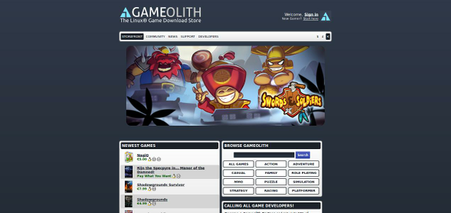

Gameolith
|  |
| Gameolith |
Gameolith - The Linux Game Download Store  war ein Spielehändler, welcher kommerzielle Linuxspiele als Download - ohne DRM - vertrieb. Diese standen in den Formaten .deb, .rpm oder .tar.gz zur Verfügung und konnten aus der persönlichen Bibbliothek heruntergeladen werden.
war ein Spielehändler, welcher kommerzielle Linuxspiele als Download - ohne DRM - vertrieb. Diese standen in den Formaten .deb, .rpm oder .tar.gz zur Verfügung und konnten aus der persönlichen Bibbliothek heruntergeladen werden.
Die Internetpräsenz wurde komplett vom Netz genommen. Bereits erworbene Titel können somit nicht mehr heruntergeladen werden.

Seiten mit Tag „Gameolith“¶
- Spiele/Avadon - The Black Fortress
- Spiele/Blocks That Matter
- Spiele/Family Farm
- Spiele/Hacker Evolution Duality
- Spiele/Hacker Evolution Untold
- Spiele/Kairo
- Spiele/LGP
- Spiele/Majesty Gold
- Spiele/Oil Rush
- Spiele/Puzzle Moppet
- Spiele/SACRED Gold
- Spiele/Shadowgrounds Survivor
- Spiele/SpaceChem
- Spiele/Steel Storm
- Spiele/Swords & Soldiers
- Spiele/TRAUMA
- Spiele/Trine
- Spiele/Trine 2
- Spiele/VVVVVV
- Spiele/Wizorb
- Erstellt mit Inyoka
-
 2004 – 2017 ubuntuusers.de • Einige Rechte vorbehalten
2004 – 2017 ubuntuusers.de • Einige Rechte vorbehalten
Lizenz • Kontakt • Datenschutz • Impressum • Serverstatus -
Serverhousing gespendet von